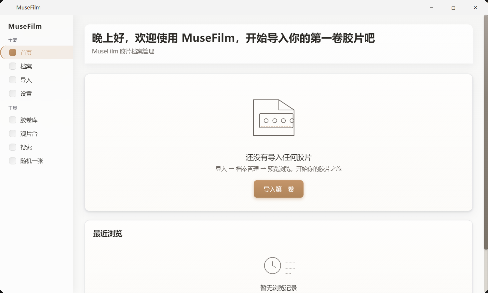
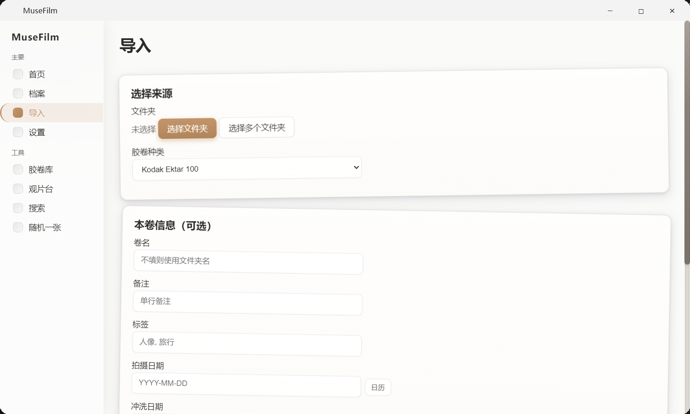
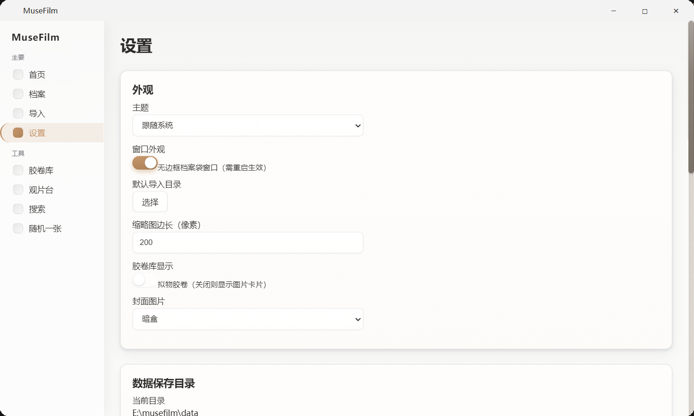
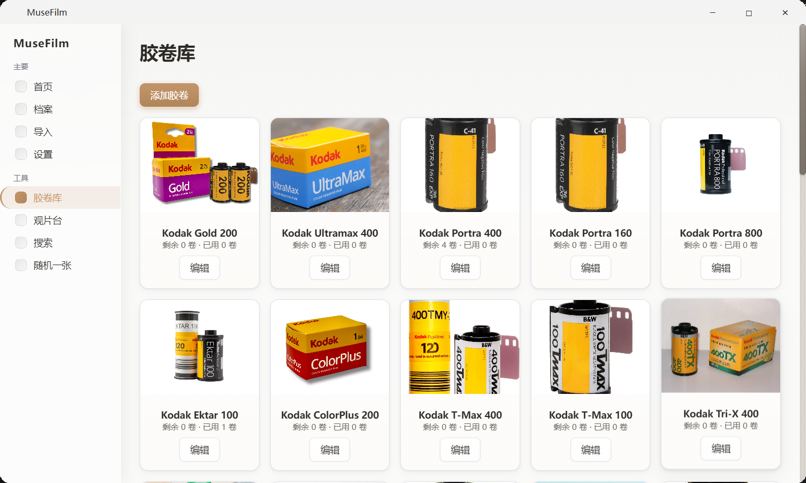
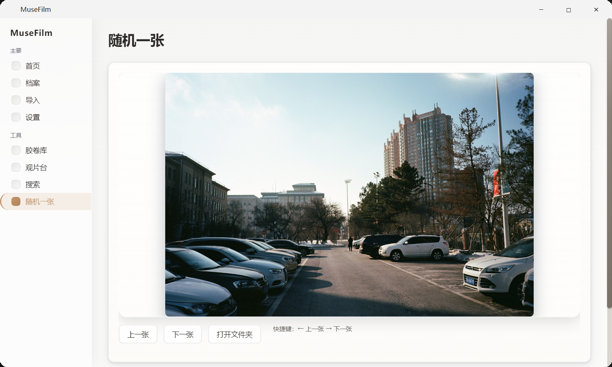
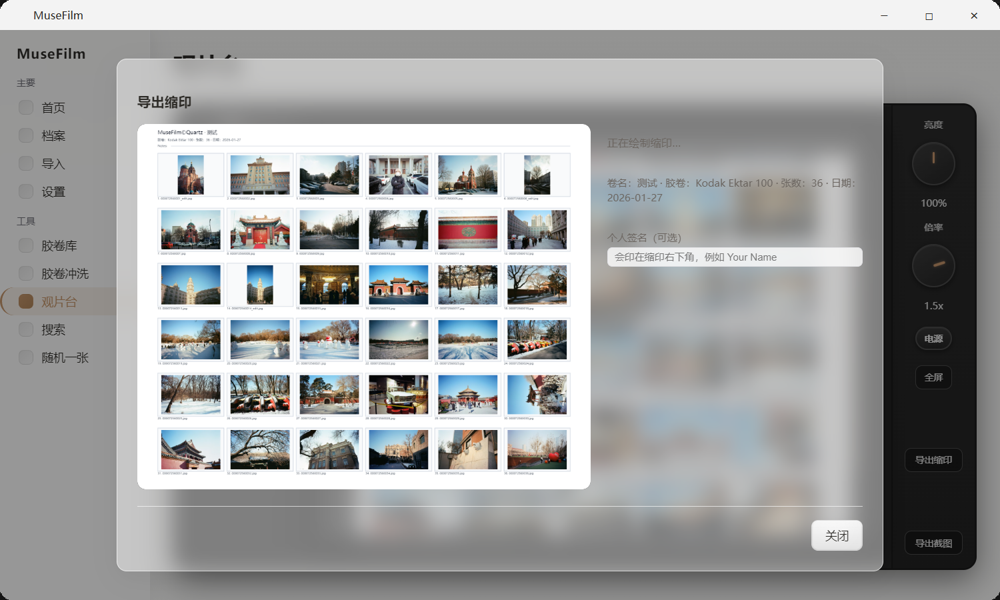
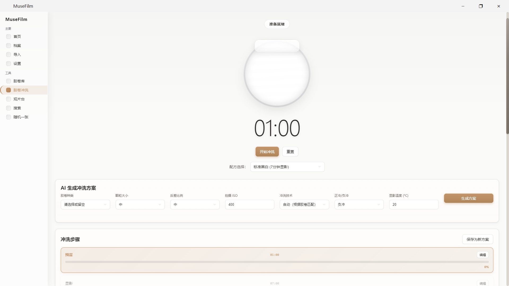
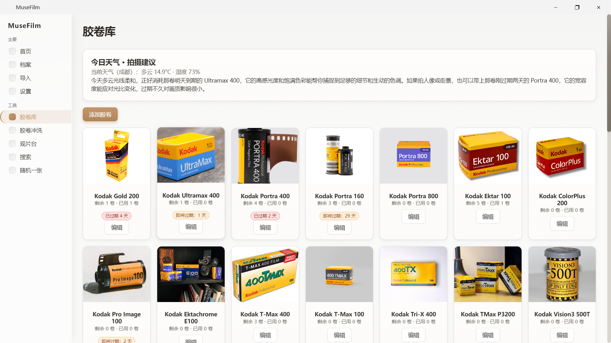

按卷导入
选择本地照片文件夹，绑定胶卷类型、拍摄信息、标签和备注。MuseFilm 只记录路径，不改变原图位置。
MuseFilm for Windows
MuseFilm 把胶片卷、扫描照片、胶卷库、观片台、标签和备注放进一个本地优先的桌面应用。 图片不移动、不复制，只保存路径和元数据，适合长期维护自己的胶片档案。

Built for film archive
选择本地照片文件夹，绑定胶卷类型、拍摄信息、标签和备注。MuseFilm 只记录路径，不改变原图位置。
内置常见胶卷，也支持自定义库存、封面、暗盒和包装图，让扫描档案与真实耗材保持关联。
横向浏览底片条，在预览、随机一张和图库之间快速切换，用更接近摄影的方式回看照片。
卷宗、胶卷、标签和设置都存放在本地 JSON 中，便于备份、迁移和二次开发。
Desktop architecture
Python 负责数据读写、缩略图缓存、EXIF、备份和系统能力，Web 前端负责界面表达。 两者通过 QWebChannel 桥接，适合快速迭代胶片工作流。
Download
选择适合你的桌面版本。下载次数会按平台记录，顶部显示 Windows 与 Mac 的总下载次数。
Windows 内测版本
Windows screenshots







Next